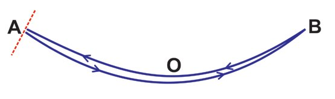
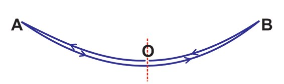
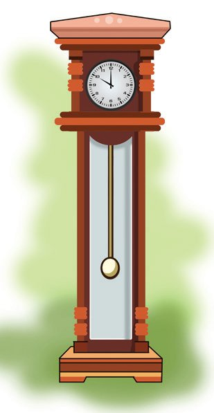
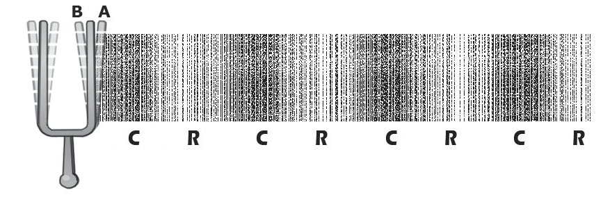
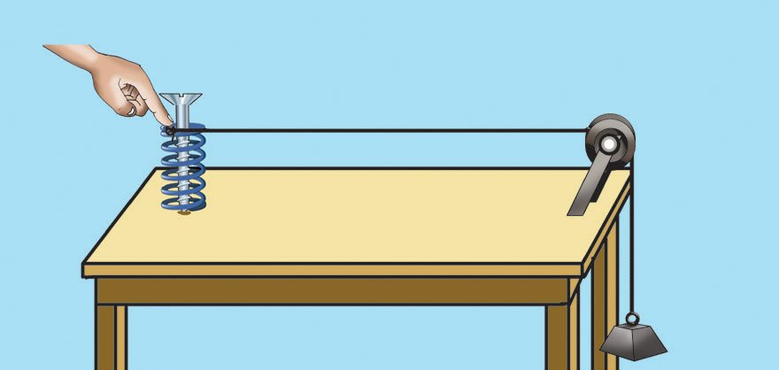
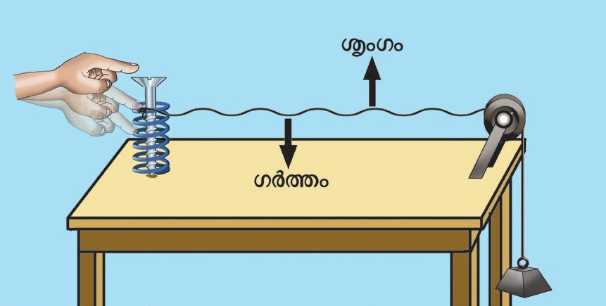
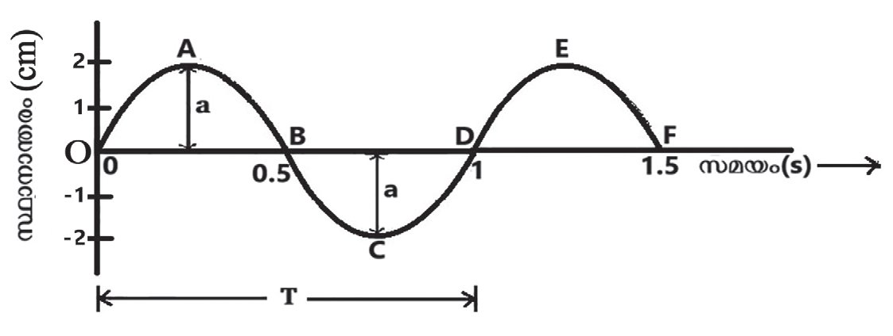
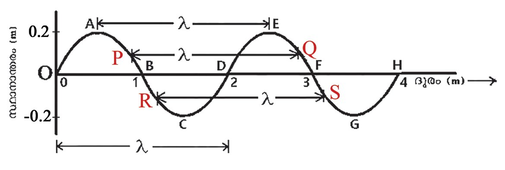
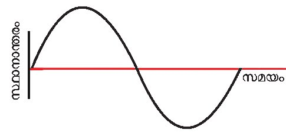
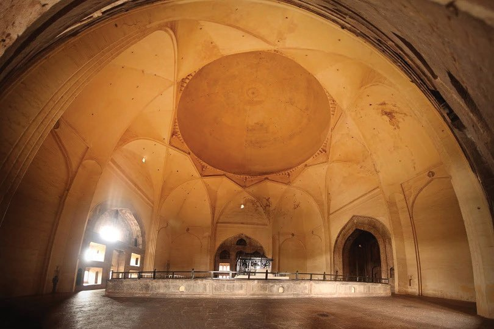

1
ടീച്ചർ, ഈ
കുട്ടി പത്ത്
ആട്ടം കഴിഞ്ഞു.
ഇറങ്ങാൻ പറയൂ.
ഇനി എന്റെ
ഊഴമാണ്.
ശബ്ദതരംഗങ്ങൾ
ശരിയാണ്,
അഞ്ച് ആട്ടമേ
ആയുള്ളൂ.
അഞ്ച്
ആട്ടമേ
ആയുള്ളൂ
ടീച്ചർ.
ഊഞ്ഞാലാടുന്ന കുട്ടിയുടെ മറുപടിയെ ടീച്ചർ ശരിവച്ചത് എന്തുകൊൊണ്ടാ
യിരിക്കും?
ഊഞ്ഞാലാട്ടം എണ്ണേണ്ടത് എങ്ങനെയായിരിക്കും?
• ഊഞ്ഞാലിന്റെ ചലനം ഏതുതരമാണ്?
(വർത്തുളം / ദോോലനം)
ഊഞ്ഞാലിന്റെ ചലനത്തെ സൂചിപ്പിക്കുന്ന രേഖാചിത്രം നിരീക്ഷിക്കൂ.
• ഊഞ്ഞാൽ സ്വവതന്ത്രാവസ്ഥയിൽ നിന്ന് ദോോലനം ആരംഭിക്കുന്ന സ്ഥാനം
(തുലനസ്ഥാനം) ഏതാണ്?
(A / O / B)
ഒരു വസ്തു തുലനസ്ഥാനത്തെ ആസ്പദമാക്കി കൃത്യയമായ ഇടവേളകളിൽ ഇരു
വശത്തേക്കും ചലിക്കുന്നതാണല്ലോോ ദോോലനം (Oscillation).
ചിത്രം 1.1 (a)
Page 8

Figure fig_ch01_p008_01 (Page 8)

Figure fig_ch01_p008_02 (Page 8)

Figure fig_ch01_p008_03 (Page 8)
ഭൗതികശാസ്ത്രം
സ്റ്റാൻഡേർഡ് - X
• ചിത്രത്തിൽ തുലനസ്ഥാനത്തുനിന്ന് ഒരു വശത്തേക്കുള്ള പരമാവധി
സ്ഥാനാന്തരം എത്ര?
(2a, 2a , a)
തുലനസ്ഥാനത്തു നിന്ന് ഒരു വശത്തേക്കുള്ള പരമാവധി സ്ഥാനാന്തര
ത്തിന്റെ അളവാണ് ആയതി (Amplitude). ആയതി a എന്ന അക്ഷരം കൊൊണ്ട് സൂചി
പ്പിക്കുന്നു. ആയതിയുടെ SI യൂണിറ്റ് മീറ്റർ (m) ആകുന്നു.
• ഊഞ്ഞാൽ ഒരു ആട്ടം (ദോോലനം) പൂർത്തിയാക്കുന്നത് എപ്പോോഴാണ്?
(O യിൽ നിന്ന് A യിലെത്തി തിരികെ O യിൽ എത്തുമ്പോോൾ / O യിൽ നിന്ന്
A യിൽ എത്തി, അവിടെ നിന്ന് B യിൽ എത്തി തിരികെ O യിൽ എത്തു
മ്പോോൾ)
ചിത്രം 1.1 (b)
O യിൽ നിന്നു പുറപ്പെട്ട് ഇരുവശങ്ങളിലേക്കും പോോയി തിരികെ
O യിൽ എത്തുമ്പോോഴാണല്ലോോ ഊഞ്ഞാൽ ഒരു ദോോലനം പൂർത്തി
യാക്കുന്നത് [ചിത്രം 1.1 (b)].
എവിടെ നിന്ന് ചലനം തുടങ്ങിയോോ അതേ ദിശയിൽ അവിടെ
തിരിച്ചു വരുന്നതാണ് ഒരു ദോോലനം.
ചിത്രം 1.1 (c)
A യിൽ നിന്നാണ് എണ്ണാൻ തുടങ്ങുന്നതെങ്കിലോോ? A യിൽ നിന്നു
B യിൽ പോോയി തിരികെ A യിൽ എത്തുമ്പോോഴാണ് ഊഞ്ഞാൽ ഒരു
ദോോലനം പൂർത്തിയാക്കുന്നത് [ചിത്രം 1.1 (c)].
ഊഞ്ഞാലാടാൻ ഊഴം കാത്തു നിൽക്കുന്ന കുട്ടിയും ഊഞ്ഞാലാ
ടുന്ന കുട്ടിയും കണ്ടെത്തിയ ദോോലനങ്ങളുടെ എണ്ണം വ്യയത്യയസ്തമായ
തിന് കാരണം എന്തായിരിക്കും? ചർച്ച ചെയ്ത് കണ്ടെത്തൂ. ശരി
യായ രീതിയിൽ ദോോലനങ്ങൾ എണ്ണുന്നത് എങ്ങനെയെന്ന് മന
സ്സിലായല്ലോോ.
ദോോലനചലനങ്ങൾക്ക് കൂടുതൽ ഉദാഹരണങ്ങൾ എഴുതൂ.
ചിത്രം 1.2
പഴയ
കാലത്തെ
പെൻഡുലം
ക്ലോോക്കുകളിൽ (Grandfather's clock)
99.35 cm (ഏകദേശം 1 m) നീള
മുള്ള പെൻഡുലം (സെക്കൻഡ്സ്
പെൻഡുലം)
ഉപയോോഗിച്ചിരുന്നു.
ഇൻവാർ എന്ന ലോോഹസങ്കരം ഉപ
യോോഗിച്ചാണ് ഇത് ഉണ്ടാക്കിയിരു
ന്നത് (Invar - Invariable).
8
• ക്ലോോക്കിലെ പെൻഡുലത്തിന്റെ ചലനം
•
ക്ലോോക്കിലെ പെൻഡുലം എത്ര ദോോലനങ്ങൾ പൂർത്തീകരിക്കു
മ്പോോഴാണ് ക്ലോോക്കിൽ ഒരു മിനിറ്റ് സമയമാറ്റം ഉണ്ടാകുന്നത് എന്ന്
ശ്രദ്ധിച്ചിട്ടുണ്ടോോ?
• 30 ദോോലനങ്ങൾക്ക് 1 മിനിറ്റ് സമയം എടുക്കുന്ന ഒരു
പെൻഡുലം ഒരു ദോോലനം പൂർത്തിയാക്കാൻ എത്ര സമയം
എടുക്കും എന്ന് കണ്ടെത്താമോോ?
30 ദോോലനങ്ങൾക്ക് ആവശ്യയമായ സമയം = 1 മിനിറ്റ് = 60 s
1 ദോോലനത്തിന് ആവശ്യയമായ സമയം
ഒരു ദോോലനത്തിന് ആവശ്യയമായ സമയത്തെ പീരിയഡ്
(Period) എന്നു പറയുന്നു. ഇത് T എന്ന അക്ഷരം കൊൊണ്ട്
സൂചിപ്പിക്കുന്നു. പീരിയഡ് അളക്കുന്നത് സെക്കന്റ് (s) എന്ന
യൂണിറ്റ് ഉപയോോഗിച്ചാണ്.
ഹെൻറിച്ച് റുഡോോൾഫ് ഹെട്സ്
ജീവിതകാലം : 1857 - 1894
• ഇതേ പെൻഡുലം ഒരു സെക്കൻഡിൽ എത്ര ദോോലന
ജന്മസ്ഥലം : ജർമ്മനിയിലെ ഹാംബർഗ്
ങ്ങൾ പൂർത്തിയാക്കും എന്ന് കണ്ടെത്തൂ.
പ്രധാന സംഭാവനകൾ : വൈദ്യുുതകാന്തിക തരം
1 മിനിറ്റിലെ (60 s) ദോോലനങ്ങളുടെ എണ്ണം = 30
ഗങ്ങളുടെ സാന്നിധ്യം പരീക്ഷണ നിരീക്ഷണങ്ങ
1
ളിലൂടെ കണ്ടെത്തി. റേഡിയോോ, ടെലിഫോോൺ,
∴ 1 സെക്കൻഡിലെ ദോോലനങ്ങളുടെ എണ്ണം = 30
60 = 2 = 0.5
ഒരു സെക്കൻഡിൽ ഉണ്ടാകുന്ന ദോോലനങ്ങളുടെ എണ്ണ
മാണ് ആവൃത്തി (Frequency). ആവൃത്തിയുടെ SI യൂണി
റ്റാണ് ഹെട്സ് (Hz). ആവൃത്തി സൂചിപ്പിക്കുന്നത് f എന്ന
അക്ഷരം കൊൊണ്ടാണ്.
ടെലിഗ്രാഫ്, ടെലിവിഷൻ എന്നിവയുടെ പുരോോഗ
തിക്ക് ആവശ്യയമായ അടിത്തറയിട്ടു. ഫോോട്ടോോഇല
ക്ട്രിക് പ്രഭാവം കണ്ടുപിടിച്ചു. അദ്ദേഹത്തോോടുള്ള
ആദരസൂചകമായിട്ടാണ് ആവൃത്തിക്ക് ഹെട്സ്
(hertz) എന്ന യൂണിറ്റ് നൽകിയത്.
കുറഞ്ഞ ആയതിയിൽ ഒരു പെൻഡുലം ദോോലനം ചെയ്യിച്ച്
പെൻഡുലത്തിന്റെ പീരിയഡ്, ആവൃത്തി ഇവ കണ്ടെത്തി
യാലോോ. ഒരു ബോോബ് ചരടിൽ കെട്ടി സ്റ്റാൻഡിൽ തൂക്കിയി
ടുക. ഈ സംവിധാനമാണ് സിമ്പിൾ പെൻഡുലം. സിമ്പിൾ
പെൻഡുലം, മീറ്റർ സ്കെയിൽ, സ്റ്റോോപ്വാച്ച് ഇവ ഉപയോോഗിച്ച്
പരീക്ഷണ പ്രവർത്തനത്തിലൂടെ പട്ടിക 1.1 പൂർത്തിയാക്കൂ.
,
ചിത്രം 1.3
പീരിയഡ് (T)
ആവൃത്തി (f)
പെൻഡുല
10 ദോോലനങ്ങൾക്ക്
ആകെ സമയം
ത്തിന്റെ
ദോോലനങ്ങളുടെ എണ്ണം
നീളം ( , ) ആവശ്യയമായ സമയം = ദോോലനങ്ങളുടെ എണ്ണം =
സമയം
cm
s
Hz
s
25
60
100
പട്ടിക 1.1
• പെൻഡുലത്തിന്റെ നീളം കൂടുമ്പോോൾ ആവൃത്തിയിൽ എന്തു മാറ്റമു
ണ്ടാകും? (കൂടുന്നു / കുറയുന്നു)
പെൻഡുലത്തിന്റെ നീളം കൂടുമ്പോോൾ ആവൃത്തി കുറയുന്നു.
• പീരിയഡും ആവൃത്തിയും തമ്മിലുള്ള ബന്ധം എന്താണ്?
ഒരു ദോോലനത്തിന് ആവശ്യയമായ സമയം = T
ഒരു സെക്കൻഡിൽ ഉണ്ടായ ദോോലനങ്ങളുടെ എണ്ണം = f
1
പീരിയഡ് (T)
പീരിയഡ് കൂടുമ്പോോൾ ആവൃത്തി കുറയുന്നു.
ആവൃത്തി (f ) =
റേഡിയോോ, ടെലിവിഷൻ തുടങ്ങിയവയുടെ
പ്രക്ഷേപണത്തിൽ കിലോോഹെട്സ്, മെഗാ ശബ്ദവുമായി ബന്ധപ്പെട്ട പരീക്ഷണങ്ങൾക്ക് ട്യൂൂണിങ് ഫോോർ
ഹെട്സ് എന്നീ പദങ്ങൾ കേട്ടിരിക്കുമല്ലോോ. ക്കുകൾ ഉപയോോഗിച്ചിരുന്നില്ലേ? ട്യൂൂണിങ് ഫോോര്ക്കിലെ
ഇവയും ആവൃത്തിയുടെ പ്രായോോഗിക യൂണിറ്റു രേഖപ്പെടുത്തൽ
ശ്രദ്ധിച്ചിട്ടുണ്ടോോ? വിവിധ ട്യൂൂണിങ്
കളാണ്.
1 kHz =1000 Hz = 103 Hz
1 MHz =1000000 Hz = 106 Hz
ഫോോര്ക്കുകൾ നിരീക്ഷിച്ച് അവ ഓരോോന്നിലെയും രേഖപ്പെ
ടുത്തൽ ഏതൊൊക്കെയാണെന്ന് യൂണിറ്റ് സഹിതം കുറിക്കൂ.
• 256 Hz
ട്യൂൂണിങ് ഫോോർക്കിലെ രേഖപ്പെടുത്തലും അതിന്റെ കമ്പനങ്ങളുടെ
എണ്ണവും തമ്മിൽ എന്തെങ്കിലും ബന്ധമുണ്ടോോ?
ട്യൂൂണിങ് ഫോോർക്കിലെ രേഖപ്പെടുത്തൽ ആ ട്യൂൂണിങ് ഫോോർക്കിന്റെ ആവൃ
ത്തിയെ സൂചിപ്പിക്കുന്നു. വ്യയത്യയസ്ത ആവൃത്തിയുള്ള ട്യൂൂണിങ് ഫോോര്ക്കുകൾ
ഒരേ രീതിയിൽ ഉത്തേജിപ്പിച്ച് ശബ്ദം ശ്രവിക്കൂ.
• വ്യയത്യാസം അനുഭവപ്പെടുന്നുണ്ടോോ?
അവ ഓരോോന്നിലും രേഖപ്പെടുത്തിയിരിക്കുന്ന ആവൃത്തി ശ്രദ്ധിക്കൂ.
• ഇവിടെ അനുഭവപ്പെട്ട ശബ്ദവ്യയത്യാസത്തിനു കാരണം ആവൃത്തിയിലുള്ള
വ്യയത്യാസമല്ലേ?
ഓരോോ ട്യൂൂണിങ് ഫോോർക്കും സ്വവതന്ത്രമായി കമ്പനം ചെയ്യുമ്പോോൾ ഒരു
സെക്കൻഡിൽ എത്ര തവണ കമ്പനം ചെയ്യുന്നു എന്ന് ICT സാധ്യയത (Audio
frequency counter) ഉപയോോഗപ്പെടുത്തി കണ്ടെത്തൂ.
ഒരു വസ്തുവിനെ സ്വവതന്ത്രമായി കമ്പനം ചെയ്യിച്ചാൽ അത് അതിന്റെ തനതായ
ആവൃത്തിയിൽ ആയിരിക്കും കമ്പനം ചെയ്യുന്നത്. ഈ ആവൃത്തിയാണ് ആ വസ്തു
വിന്റെ സ്വാഭാവിക ആവൃത്തി (Natural frequency).
ഒരു വസ്തുവിന്റെ സ്വാഭാവിക ആവൃത്തിയെ സ്വാധീനിക്കുന്ന ഘടകങ്ങളാണ് :
വസ്തുവിന്റെ നീളം
വലുപ്പം
പദാർഥത്തിന്റെ സ്വവഭാവം തുടങ്ങിയവ.
ഇലാസ്തികത
ഇവയിൽ ഏതെങ്കിലും ഒന്നിന് മാറ്റമുണ്ടായാലും സ്വാഭാവിക ആവൃത്തിക്ക്
മാറ്റമുണ്ടാകും.
എല്ലാ വസ്തുക്കളുംം സ്വാഭാവിക ആവൃത്തിയിൽ മാത്രമായിരിക്കുമോോ
കമ്പനം ചെയ്യുന്നത്?
10
മേശപ്പുറത്ത് വച്ചിരിക്കുന്ന മിക്സി പ്രവർത്തിപ്പിക്കുമ്പോോൾ മേശയും കമ്പനം
ചെയ്യുന്നതായി അനുഭവപ്പെട്ടിട്ടില്ലേ?
ഒരു ട്യൂൂണിങ് ഫോോർക്ക് ഉത്തേജിപ്പിച്ച് ശ്രവിക്കൂ. ഉത്തേജി
പ്പിച്ച ട്യൂൂണിങ് ഫോോർക്കിന്റെ തണ്ട് മേശപ്പുറത്ത് വച്ചപ്പോോൾ
കേൾക്കുന്ന ശബ്ദത്തിൽ എന്ത് മാറ്റമുണ്ടായി? ശബ്ദം ഉച്ചത്തി
ലായതിന് കാരണമെന്തായിരിക്കും?
ഈ സന്ദർഭത്തിൽ ട്യൂൂണിങ് ഫോോർക്കിനൊൊപ്പം മേശയും
കമ്പനം ചെയ്യുന്നതുകൊൊണ്ടല്ലേ ശബ്ദം ഉച്ചത്തിലായത്.
കമ്പനം ചെയ്യുന്ന വസ്തുവിന്റെ പ്രേരണം മൂലം
മറ്റൊൊരു വസ്തു കമ്പനം ചെയ്യുന്നതാണ് പ്രണോോദിത
കമ്പനം (Forced vibration).
ചിത്രം നിരീക്ഷിക്കൂ [ചിത്രം 1.5 (a)].
ചിത്രം 1.4
ഏകദേശം 17 cm നീളമുള്ള ഒരേ പോോലെയുള്ള 3 ഹാക്സോോ
ബ്ലേഡ് കഷണങ്ങളുംം ഏകദേശം 13 cm നീളമുള്ള ഒരേ
പോോലെയുള്ള 3 ഹാക്സോോബ്ലേഡ് കഷണങ്ങളുംം രണ്ട് തടി
ക്കട്ടകൾക്കിടയിൽ ഉറപ്പിച്ചിരിക്കുന്ന സംവിധാനം ഉപയോോ
ഗിച്ച് ചുവടെ നൽകിയ പ്രവർത്തനങ്ങൾ ചെയ്തു നോോക്കൂ.
• A എന്ന ഹാക്സോോബ്ലേഡ് വിരൽകൊൊണ്ട് തട്ടി ഉത്തേജി
പ്പിക്കുക. എന്ത് നിരീക്ഷിക്കുന്നു?
(എല്ലാ ബ്ലേഡുകളുംം കമ്പനം ചെയ്യുന്നു / A മാത്രം
കമ്പനം ചെയ്യുന്നു)
ചിത്രം 1.5 (a)
• എല്ലാ ബ്ലേഡുകളുംം ഒരേ ആയതിയിലാണോോ കമ്പനം ചെയ്യുന്നത്?
• കൂടിയ ആയതിയിൽ കമ്പനം ചെയ്തവ ഏതെല്ലാമാണ്?
• എല്ലാ ബ്ലേഡുകളുടെയും കമ്പനം നിർത്തിയ ശേഷം B യെ കമ്പനം
ചെയ്യിച്ച് നിരീക്ഷണം സയൻസ് ഡയറിയിൽ എഴുതൂ.
• A എന്ന ഹാക്സോോബ്ലേഡിനെ കമ്പനം ചെയ്യിച്ചപ്പോോൾ C, E എന്നീ
ബ്ലേഡുകൾ കൂടിയ ആയതിയിൽ കമ്പനം ചെയ്തത് എന്തുകൊൊണ്ടായി
രിക്കും?
C, E എന്നിവയുടെ സ്വാഭാവിക ആവൃത്തി A യുടെ സ്വാഭാവിക ആവൃത്തിക്ക്
തുല്യയമായതുകൊൊണ്ടാണ് അവ കൂടിയ ആയതിയിൽ കമ്പനം ചെയ്തത്.
പ്രണോോദിത കമ്പനത്തിന് വിധേയമാകുന്ന വസ്തുവിന്റെ സ്വാഭാവിക ആവൃ
ത്തിയും പ്രേരണം ചെലുത്തുന്ന വസ്തുവിന്റെ സ്വാഭാവിക ആവൃത്തിയും
തുല്യയമായാൽ ആ വസ്തുക്കൾ അനുനാദ (Resonance) ത്തിലാണെന്ന് പറയാം.
അനുനാദത്തിന് വിധേയമാകുന്ന വസ്തു പരമാവധി ആയതിയിൽ കമ്പനം ചെയ്യും.
11
• ഏകദേശം 50 cm നീളവും 4 cm (1½ ഇഞ്ച്) വ്യാസവുമുള്ള PVC പൈപ്പ്
പൂർണ്ണമായും ജലത്തിൽ താഴ്ത്തി വച്ച ശേഷം 512 Hz ന്റെ ട്യൂൂണിങ്
ഫോോർക്ക് ഉത്തേജിപ്പിച്ച് പൈപ്പിന്റെ മുകൾ ഭാഗത്ത് പിടിക്കുക. പൈപ്പ്
ക്രമമായി ഉയർത്തി പൈപ്പിനുള്ളിലെ വായുയൂപത്തിന്റെ നീളം വ്യയത്യാ
സപ്പെടുത്തൂ. ഒരു ഘട്ടം എത്തുമ്പോോൾ ശബ്ദം കൂടുതൽ ഉച്ചത്തിൽ കേൾ
ക്കുന്നതായി അനുഭവപ്പെടുന്നില്ലേ? ഇതിന്റെ കാരണം എന്തായിരിക്കും?
സയൻസ് ഡയറിയിൽ രേഖപ്പെടുത്തൂ.
പ്രണോോദിത കമ്പനവും അനുനാദവും പ്രയോോജനപ്പെടുത്തിയിരിക്കുന്ന
സന്ദർഭങ്ങൾ.
MRI സ്കാനിങ്ങിൽ
ചിത്രം 1.5 (b)
പകരണങ്ങളിൽ.
സ്റ്റെതസ്കോോപ് ഉപയോോഗിച്ച് ഹൃദയമിടിപ്പ് ശ്രവിച്ചു നോോക്കൂ. ഹൃദയമി
ടിപ്പിന്റെ വളരെ നേർത്ത ശബ്ദം പോോലും കേൾക്കാൻ കഴിയുന്നില്ലേ?
ശരീരത്തിലെ ചെറിയ ശബ്ദങ്ങൾ ശ്രവിക്കുന്നതിന് ഉപയോോഗിക്കുന്ന
സ്റ്റെതസ്കോോപ്പിൽ ശബ്ദത്തിന്റെ പ്രണോോദിത കമ്പനവും അനുനാദവും
പ്രയോോജനപ്പെടുത്തിയിരിക്കുന്നു.
മെഗാഫോോൺ, ഹോോൺ, സംഗീതോോപകരണങ്ങളായ ട്രംപറ്റ്സ്, നാഗ
സ്വവരം തുടങ്ങിയ ഉപകരണങ്ങളിൽ.
ചിത്രം 1.6 (a)
ഒരു സിമ്പിൾ പെൻഡുലത്തിന്റെ ആവൃത്തി 1 Hz ആണ്. അതിന്റെ
പീരിയഡ് എത്രയാണ്?
ഒരു പെൻഡുലം ഒരു ദോോലനം പൂർത്തിയാക്കാൻ 0.5 s എടുക്കു
ന്നുവെങ്കിൽ അതിന്റെ ആവൃത്തി എത്ര?
512 Hz ആവൃത്തിയുള്ള ഒരു ട്യൂൂണിങ് ഫോോർക്ക് ഉത്തേജിപ്പിച്ച്
ചിത്രം 1.6 (b)
അതിന്റെ തണ്ട് മേശമേൽ അമർത്തി വയ്ക്കുന്നു. ഈ അവസരത്തിൽ
മേശ കമ്പനം ചെയ്യുമോോ? ഈ പ്രതിഭാസം ഏതു പേരിൽ അറിയപ്പെ
ടുന്നു?
256 Hz ആവൃത്തിയുള്ള ട്യൂൂണിങ് ഫോോർക്ക് കമ്പനം ചെയ്യുമ്പോോൾ അതിന്റെ
ചുറ്റുമുള്ള വായുവും ശബ്ദം കേൾക്കുന്ന വ്യയക്തിയുടെ കർണ്ണപുടവും ഒരു
സെക്കൻഡിൽ 256 തവണ കമ്പനം ചെയ്യുമല്ലോോ.
ട്യൂൂണിങ് ഫോോർക്ക് കമ്പനം ചെയ്യുമ്പോോൾ അടുത്തുള്ള വായുവിന്റെ
കമ്പനം എങ്ങനെയായിരിക്കും?
തരംഗചലനം (Wave Motion)
12
ശബ്ദപ്രേഷണവുമായി ബന്ധപ്പെട്ട് സ്കൂൾ ശാസ്ത്രക്ലബ്ബിൽ കുട്ടി അവതരിപ്പിച്ച പരീ
ക്ഷണത്തിൽ ഒരു പ്രത്യേേക സമയത്ത് കണ്ട ദൃശ്യയമാണ് ചിത്രീകരിച്ചിരിക്കുന്നത്.
ഒരഗ്രം അടഞ്ഞ, നീളമുള്ള,
സുതാര്യയമായ ട്യൂൂബിൽ ഭാരം
കുറഞ്ഞ പേപ്പർ ബോോളുകൾ
ഇട്ട
ശേഷം
ട്യൂൂബിന്റെ
സ്വവതന്ത്ര അഗ്രത്തിലൂടെ ഉച്ച
ചിത്രം 1.7
ത്തിലും ഒരേ ആവൃത്തിയിലു
മുള്ള ശബ്ദം കടന്നു പോോകുമ്പോോൾ പേപ്പർ ബോോളുകൾ അവയുടെ തുലനസ്ഥാ
നത്തുനിന്ന് മുന്നോോട്ടുംം പിന്നോോട്ടുംം കമ്പനം ചെയ്യുന്നത് കാണാം. മാത്രമല്ല
ബോോളുകൾ രണ്ടാമത്തെ അഗ്രത്തിലേക്ക് നീങ്ങി പോോകാതെ ട്യൂൂബിനുള്ളിൽ
ക്രമമായി ഒന്നിടവിട്ട് അടുത്തും അകന്നും കാണപ്പെടുന്നു. എങ്ങനെയായി
രിക്കും ഇത് രൂപപ്പെടുന്നത്?
ഒരു പ്രവർത്തനം ചെയ്തു നോോക്കാം.
PhET→ Sound waves
ചിത്രം 1.8 (a) യിൽ കാണുന്നതുപോോലെ മേശപ്പുറത്ത് വച്ച സ്ലിങ്കിയുടെ രണ്ട്
അഗ്രങ്ങളുംം വലിച്ചു പിടിക്കുക.
ഒരു അഗ്രത്തിലെ ഏതാനും ചുരുളുകൾ
അമർത്തി വിട്ടുനോോക്കൂ. സ്ലിങ്കിയിൽ രൂപപ്പെ
ടുന്ന വിക്ഷോോഭം നിരീക്ഷിക്കൂ.
ചിത്രം 1.8 (b) യിൽ കാണുന്നതുപോോലെ സ്ലിങ്കി
യുടെ ഒരഗ്രത്തെ മുന്നോോട്ടുംം പുറകോോട്ടുംം ചലി
പ്പിച്ച് നോോക്കൂ. എന്ത് നിരീക്ഷിക്കുന്നു?
സ്ലിങ്കിയിൽ
ഉണ്ടാകുന്ന
ചിത്രം 1.8 (a)
വിക്ഷോോഭങ്ങൾ
(Disturbances) ഒരഗ്രത്തിൽ നിന്ന് രണ്ടാമത്തെ
അഗ്രത്തിലേക്ക്
ന്നില്ലേ?
നീങ്ങിപ്പോോകുന്നത്
കാണു
• ഒരഗ്രത്തിൽ രൂപപ്പെടുന്ന വിക്ഷോോഭങ്ങളോോ
ടൊൊപ്പം സ്ലിങ്കിയിലെ വലയങ്ങൾ രണ്ടാമത്തെ
അഗ്രത്തേക്ക് നീങ്ങിപ്പോോകുന്നുണ്ടോോ?
ചിത്രം 1.8 (b)
സ്ലിങ്കിയുടെ ഒരു ഭാഗത്തുണ്ടാകുന്ന വിക്ഷോോഭം വലയങ്ങളുടെ പരിണത
സ്ഥാനാന്തരം ഇല്ലാതെ മറുഭാഗത്തേക്ക് വ്യാപിച്ചത് കണ്ടല്ലോോ.
ഇവിടെ മാധ്യയമത്തിന്റെ ഒരു ഭാഗത്ത് ലഭിക്കുന്ന ഊർജം തൊൊട്ടടുത്തതി
ലേക്കും അവിടെനിന്നു തുടർന്നും കൈമാറിക്കൊൊണ്ട് മറ്റു ഭാഗങ്ങളിലേക്ക്
വ്യാപിക്കുന്നു.
മാധ്യയമത്തിന്റെ ഒരു ഭാഗത്ത് ലഭിക്കുന്ന ഊർജം മറ്റു ഭാഗങ്ങളിലേക്ക് എത്തി
ക്കാനുള്ള മാർഗങ്ങളിൽ ഒന്നാണ് തരംഗചലനം.
ഒരു ഭാഗത്ത് ലഭിക്കുന്ന ഊർജം മറ്റു ഭാഗങ്ങളിലേക്ക് ദോോലനങ്ങളിലൂടെ
തുടർച്ചയായി പ്രസരിക്കുന്നതാണ് തരംഗചലനം (Wave motion).
13
Page 14

Figure fig_ch01_p014_01 (Page 14)
ഭൗതികശാസ്ത്രം
സ്റ്റാൻഡേർഡ് - X
തരംഗങ്ങൾക്ക് ഉദാഹരണങ്ങൾ നൽകിയിരിക്കുന്നു :
റേഡിയോോ തരംഗം
സീസ്മിക് തരംഗം
പ്രകാശ തരംഗം
ശബ്ദ തരംഗം
ജലാശയങ്ങളിൽ ഉണ്ടാകുന്ന ഓളങ്ങൾ
• ഈ തരംഗങ്ങൾക്കെല്ലാം സഞ്ചരിക്കാൻ മാധ്യയമം ആവശ്യയമുണ്ടോോ? പട്ടിക 1.2
അനുയോോജ്യയമായി പൂർത്തിയാക്കൂ.
പ്രേഷണത്തിന് മാധ്യയമം ആവശ്യയമുള്ളവ
പ്രേഷണത്തിന് മാധ്യയമം ആവശ്യയമില്ലാത്തവ
• സീസ്മിക് തരംഗം
•
• റേഡിയോോ തരംഗം
•
പട്ടിക 1.2
വൈദ്യുുതകാന്തികതരംഗങ്ങൾ (Electromagnetic Waves)
റേഡിയോോ തരംഗങ്ങൾ, മൈക്രോോവേവ്, ഇൻഫ്രാറെഡ് തരംഗങ്ങൾ, ദൃശ്യയപ്രകാശം,
അൾട്രാവയലറ്റ് കിരണങ്ങൾ, എക്സ് കിരണങ്ങൾ, ഗാമാ കിരണങ്ങൾ എന്നിവ
വൈദ്യുുതകാന്തികതരംഗങ്ങളാണ്. ഇവയുടെ പ്രേഷണത്തിന് മാധ്യയമം ആവശ്യയ
മില്ല.
യാന്ത്രികതരംഗങ്ങൾ (Mechanical Waves)
പ്രേഷണത്തിന് മാധ്യയമം ആവശ്യയമായ തരംഗങ്ങളാണ് യാന്ത്രികതരംഗങ്ങൾ.
യാന്ത്രികതരംഗങ്ങൾ പ്രധാനമായും രണ്ടു വിധമുണ്ട്. അനുദൈർഘ്യയതരംഗ
ങ്ങളുംം അനുപ്രസ്ഥതരംഗങ്ങളുംം.
അനുദൈർഘ്യയതരംഗങ്ങൾ (Longitudinal Waves)
• ചിത്രം 1.8 (b) യിൽ സ്ലിങ്കിയിലെ വലയങ്ങൾ തരംഗം നീങ്ങുന്ന ദിശയ്ക്ക് സമാന്ത
രമായാണോോ ലംബമായാണോോ ചലിച്ചത്?
മാധ്യയമത്തിലെ കണികകൾ തരംഗത്തിന്റെ പ്രേഷണദിശയ്ക്ക് സമാന്തരമായി
കമ്പനം ചെയ്യുന്ന തരംഗങ്ങളാണ് അനുദൈർഘ്യയതരംഗങ്ങൾ.
ട്യൂൂണിങ് ഫോോർക്ക് കമ്പനം ചെയ്യുമ്പോോൾ
വായുവിൽ രൂപപ്പെടുന്ന മർദവ്യയതിയാനങ്ങൾ
14
ചിത്രം 1.9
ശബ്ദപ്രേഷണത്തിന്
മാധ്യയമം
ആവശ്യയമാ
ണെന്ന് പഠിച്ചിട്ടുണ്ടല്ലോോ. വായുവിലൂടെ ശബ്ദം
പ്രേഷണം ചെയ്യുന്നത് എപ്രകാരമാണെന്ന്
നോോക്കാം. ചിത്രം നിരീക്ഷിക്കൂ.
Page 15

Figure fig_ch01_p015_01 (Page 15)

Figure fig_ch01_p015_02 (Page 15)
ശബ്ദതരംഗങ്ങൾ
• ചിത്രം 1.9 ൽ ട്യൂൂണിങ് ഫോോർക്കിന്റെ ഭുജം തുലനസ്ഥാനത്തു നിന്ന് A
എന്ന വശത്തേക്ക് ചലിക്കുമ്പോോൾ ആ വശത്തുള്ള വായുമർദം
(കൂടുന്നു/ കുറയുന്നു)
• അതേ ഭുജം B എന്ന വശത്തേക്ക് ചലിക്കുമ്പോോൾ A എന്ന വശത്തുള്ള
വായുമർദമോോ?
• ട്യൂൂണിങ് ഫോോർക്കിന്റെ ഭുജങ്ങൾ തുടർച്ചയായി കമ്പനം ചെയ്യുമ്പോോൾ
വായുവിൽ മർദം കൂടിയതും കുറഞ്ഞതുമായ മേഖലകൾ ഇടവിട്ട് രൂപ
പ്പെടുകയില്ലേ?
• സ്ലിങ്കിയിൽ ഉണ്ടായ തരംഗവും വായുവിൽ ട്യൂൂണിങ് ഫോോർക്ക് ഉണ്ടാ
ക്കിയ തരംഗവും താരതമ്യംം ചെയ്യുക.
ഒരു സ്രോോതസ്സിൽ നിന്ന് പുറപ്പെടുന്ന ശബ്ദം വായുവിൽ തുടർച്ചയായും
ക്രമമായും മർദവ്യയതിയാനങ്ങൾ രൂപപ്പെടുത്തുന്നു. വായുതന്മാത്രകൾ തമ്മി
ലുള്ള അകലം കുറഞ്ഞുവരുന്ന ഭാഗത്ത് മർദം കൂടുതലായി അനുഭവപ്പെ
ടുന്നു. ഇത്തരം മേഖലകൾ ഉച്ചമർദമേഖലകൾ (Compressions) (ചിത്രത്തിൽ
C) എന്നും മർദം കുറഞ്ഞ മേഖലകൾ നീചമർദമേഖലകൾ (Rarefactions)
(ചിത്രത്തിൽ R) എന്നും അറിയപ്പെടുന്നു. മാധ്യയമത്തിൽ ഒന്നിടവിട്ട് ഉച്ചമർദമേ
ഖലകളുംം നീചമർദമേഖലകളുംം രൂപപ്പെടുത്തി ശബ്ദം സഞ്ചരിക്കുന്നു. ശബ്ദം
അനുദൈർഘ്യയതരംഗമാണെന്ന് മനസ്സിലായല്ലോോ.
അനുപ്രസ്ഥതരംഗങ്ങൾ (Transverse Waves)
ഒരു പ്രവർത്തനം ചെയ്തു നോോക്കൂ.
ആണി ഉപയോോഗിച്ച് ഒരു സ്പ്രിങ് മേശമേൽ
കുത്തനെ ഉറപ്പിക്കുക. ഒരു ചരടിന്റെ ഒരഗ്രം സ്പ്രി
ങ്ങിന്റെ മുകൾ ഭാഗത്തും രണ്ടാമത്തെ അഗ്രം 50 g
തൂക്കക്കട്ടിയുമായും കെട്ടി ഉറപ്പിക്കുക. ചിത്രത്തിൽ
കാണുന്നതുപോോലെ മേശയുടെ അഗ്രത്ത് ഉറപ്പിച്ച
കപ്പിയിലൂടെ ചരട് കടത്തിയിടുക.
ചിത്രം 1.10 (a)
സ്പ്രിങ് തുടർച്ചയായി അമർത്തുകയും സ്വവതന്ത്രമാക്കുകയും ചെയ്തുനോോക്കൂ.
എന്തു നിരീക്ഷിക്കുന്നു?
• തുലനസ്ഥാനത്തെ ആസ്പദമാക്കി ചരടിലെ കണികകളുടെ ചലനം എപ്ര
കാരമാണ്? (സമാന്തരമായി / ലംബമായി)
• ചരടിലുണ്ടാകുന്ന തരംഗം നീങ്ങുന്ന ദിശയ്ക്ക് സമാ
ന്തരമായാണോോ ലംബമായാണോോ ചരടിലെ ഓരോോ
ബിന്ദുവും ചലിക്കുന്നത്?
• ചരടിലെ ബിന്ദുക്കൾ അവയുടെ തുലന സ്ഥാന
ത്തുനിന്ന് ലംബമായി മുകളിലേക്കും താഴേക്കും
ചലിക്കുന്നതല്ലാതെ അവയ്ക്ക് പരിണത സ്ഥാനാന്ത
രചലനം ഉണ്ടാകുന്നുണ്ടോോ?
മാധ്യയമത്തിലെ കണികകൾ തരംഗത്തിന്റെ പ്രേഷണദിശയ്ക്ക് ലംബമായി കമ്പനം
ചെയ്യുന്ന തരംഗങ്ങളാണ് അനുപ്രസ്ഥതരംഗങ്ങൾ.
ചിത്രം 1.10 (b) യിലെ അനുപ്രസ്ഥതരംഗരൂപം നിരീക്ഷിക്കൂ. അനുപ്രസ്ഥ
തരംഗങ്ങളിൽ തുലന സ്ഥാനത്തുനിന്ന് ഏറ്റവും ഉയർന്നു നിൽക്കുന്ന
ഭാഗങ്ങളാണ് ശൃംഗങ്ങൾ (crests). ഏറ്റവും താഴ്ന്നു നിൽക്കുന്ന ഭാഗങ്ങളാണ്
ഗർത്തങ്ങൾ (troughs).
സ്ലിങ്കി മേശപ്പുറത്ത് വച്ചശേഷം അതിന്റെ രണ്ട
ഗ്രങ്ങളുംം വലിച്ചു പിടിക്കുക. സ്ലിങ്കിയുടെ ഒരു
അഗ്രത്തിൽ പിടിച്ച് സ്ലിങ്കിയെ ഇരുവശങ്ങളി
ലേക്കും ചലിപ്പിക്കുക [ചിത്രം 1.10 (c)].
• സ്ലിങ്കിയിൽ ഉണ്ടാക്കിയ തരംഗരൂപത്തിന്
സമാന്തരമായാണോോ ലംബമായാണോോ വലയ
ങ്ങൾ ചലിക്കുന്നത്?
• സ്ലിങ്കിയിൽ ഉണ്ടായത് ഏതുതരം തരംഗരൂപമാണ്?
വൈദ്യുുതകാന്തികതരംഗങ്ങൾ അനുപ്രസ്ഥതരംഗങ്ങളാണ്.
ചിത്രം 1.10 (c)
അനുപ്രസ്ഥതരംഗം, അനുദൈർഘ്യയതരംഗം എന്നിവയുമായി ബന്ധ
പ്പെട്ട ചില പ്രത്യേേകതകൾ ചുവടെ നൽകിയിരിക്കുന്നു. അവയെ
തരംതിരിച്ച് പട്ടിക പൂർത്തിയാക്കുക.
PhET→ Wave on a
String
• തരംഗത്തിന്റെ പ്രേഷണദിശയ്ക്ക് ലംബമായി മാധ്യയമത്തിലെ കണികകൾ
കമ്പനം ചെയ്യുന്നു.
• ഉച്ചമർദമേഖലകളുംം നീചമർദമേഖലകളുംം ഉണ്ടാകുന്നു.
• മാധ്യയമത്തിൽ മർദവ്യയതിയാനങ്ങൾ ഉണ്ടാകുന്നു.
• ശൃംഗങ്ങളുംം ഗർത്തങ്ങളുംം ഉണ്ടാകുന്നു.
• തരംഗത്തിന്റെ പ്രേഷണദിശയ്ക്ക് സമാന്തരമായി മാധ്യയമത്തിലെ കണികകൾ
കമ്പനം ചെയ്യുന്നു.
• മാധ്യയമത്തിൽ മർദവ്യയതിയാനങ്ങൾ ഉണ്ടാകുന്നില്ല.
അനുദൈർഘ്യയതരംഗം
അനുപ്രസ്ഥതരംഗം
• തരംഗത്തിന്റെ
പ്രേഷണദി
തരംഗത്തിന്റെ പ്രേഷണദിശയ്ക്ക് ലംബമായി മാധ്യയമ
ശയ്ക്ക് സമാന്തരമായി മാധ്യയമ
ത്തിലെ കണികകൾ കമ്പനം ചെയ്യുന്നു.
ത്തിലെ കണികകൾ കമ്പനം •
ചെയ്യുന്നു.
•
പട്ടിക 1.3
തരംഗങ്ങളുടെ സവിശേഷതകൾ എന്തൊൊക്കെയായിരിക്കും?
16
Page 17

Figure fig_ch01_p017_01 (Page 17)

Figure fig_ch01_p017_02 (Page 17)

Figure fig_ch01_p017_03 (Page 17)
ശബ്ദതരംഗങ്ങൾ
തരംഗങ്ങളുടെ സവിശേഷതകൾ (Characteristics of Waves)
തരംഗങ്ങളുടെ പ്രധാന സവിശേഷതകളാണ് :
ആയതി
ആവൃത്തി
പീരിയഡ്
തരംഗദൈർഘ്യം തരംഗവേഗം
എന്നിവ.
ആയതി (Amplitude)
തരംഗത്തിലെ ഒരു കണികയുടെ സ്ഥാനാ
ന്തര − സമയഗ്രാഫ് ചിത്രീകരിച്ചിരി
ക്കുന്നു.
• ചിത്രത്തിൽ തരംഗത്തിന്റെ തുലന
സ്ഥാനത്തു നിന്ന് ഏറ്റവും കൂടിയ
സ്ഥാനാന്തരമുള്ള ബിന്ദുക്കൾ ഏതൊൊ
ക്കെയാണ്?
ചിത്രം 1.11
(A, B, C, D, E)
• ചിത്രത്തിൽ തരംഗത്തിന്റെ ആയതി എത്ര?
പീരിയഡ് (Period)
സൈക്കിൾ (Cycle)
തരംഗചലനത്തിൽ ഒരു കണിക
യുടെ
പൂർണ്ണമായ
ഒരു
ദോോലനമാണ് ഒരു സൈക്കിൾ.
• ചിത്രം 1.11 ൽ മാധ്യയമത്തിലെ കണിക ഒരു കമ്പനം (സൈക്കിൾ)
പൂർത്തിയാക്കാൻ എടുക്കുന്ന സമയം എത്രയാണ്?
• ചിത്രത്തിലെ തരംഗത്തിന്റെ പീരിയഡ് എത്ര?
ആവൃത്തി (Frequency)
ചിത്രം 1.12
ഒരു ബിന്ദുവിലൂടെ ഒരു സെക്കന്റിൽ കടന്നു പോോകുന്ന സൈക്കിളു
കളുടെ എണ്ണമാണല്ലോോ തരംഗത്തിന്റെ ആവൃത്തി.
• ചിത്രം 1.11 ൽ തരംഗം O യിൽ നിന്ന് D യിൽ എത്താൻ 1 s എടുക്കുന്നെ
ങ്കിൽ തരംഗത്തിന്റെ ആവൃത്തി കണ്ടെത്തൂ.
തരംഗദൈർഘ്യം (Wavelength)
തരംഗത്തിലെ കണികകളുടെ ഒരു പ്രത്യേേക സമയത്തെ അവസ്ഥയാണ്
ചിത്രീകരിച്ചിരിക്കുന്നത് [ചിത്രം 1.13 (a)].
സമാന
കമ്പനാവസ്ഥയിലുള്ള
അടു
ത്തടുത്ത രണ്ടു കണികകൾ തമ്മി
ലുള്ള അകലമാണ് തരംഗദൈർഘ്യം. ഇത്
മാധ്യയമത്തിലെ ഓരോോ കണികയും ഒരു
കമ്പനം
പൂർത്തിയാക്കാൻ
എടുത്ത
സമയം കൊൊണ്ട് തരംഗം സഞ്ചരിക്കുന്ന
ചിത്രം 1.13 (a)
ദൂരത്തിന് തുല്യയമാണ്. അടുത്തടുത്ത
രണ്ട് ശൃംഗങ്ങൾ തമ്മിലോോ അടുത്തടുത്ത രണ്ട് ഗർത്തങ്ങൾ തമ്മിലോോ ഉള്ള
അകലവും അനുപ്രസ്ഥ തരംഗത്തിന്റെ തരംഗദൈർഘ്യയമായി കണക്കാക്കാം.
17
തരംഗദൈർഘ്യയത്തെ സൂചിപ്പിക്കാൻ ലാംഡ (λ) എന്ന ഗ്രീക്ക് അക്ഷരം ഉപയോോഗി
ക്കുന്നു. തരംഗദൈർഘ്യയത്തിന്റെ യൂണിറ്റ് മീറ്റർ (m) ആണ്.
• ചിത്രം 1.13 (a) യിൽ A എന്ന കണികയുമായി സമാന കമ്പനാവസ്ഥയിലുള്ള
കണിക ഏത്? (B, C, D, E)
• P യുമായോോ?
B യുമായോോ?
• ചിത്രം 1.13 (b) യിൽ തരംഗദൈർഘ്യയത്തെ (λ) സൂചിപ്പിക്കുന്നത് ഏത്?
(CR, RR)
• ഇവിടെ CR സൂചിപ്പിക്കുന്നത് (λ, m2 , m4 )
ചിത്രം 1.13 (b)
അടുത്തടുത്ത രണ്ട് ഉച്ചമർദമേഖ
ലകൾ തമ്മിലോോ അടുത്തടുത്ത
രണ്ട് നീചമർദമേഖലകൾ തമ്മിലോോ
ഉള്ള അകലം അനുദൈർഘ്യയതരംഗ
ത്തിന്റെ തരംഗദൈർഘ്യയമായി കണ
ക്കാക്കാം.
തരംഗവേഗം (Speed of wave)
ഒരു സെക്കൻഡ് കൊൊണ്ട് തരംഗം സഞ്ചരിക്കുന്ന ദൂരമാണ് തരംഗവേഗം.
തരംഗവേഗത്തിന്റെ യൂണിറ്റ് m/s ആണ്.
• ഒരു തരംഗം 2 s ൽ 700 m സഞ്ചരിക്കുന്നുവെങ്കിൽ തരംഗവേഗം എത്രയാണ്?
ആവൃത്തിയും തരംഗദൈർഘ്യയവും തമ്മിൽ ബന്ധമുണ്ടോോ?
സ്ലിങ്കി മേശപ്പുറത്ത് വച്ച ശേഷം രണ്ട് അഗ്രങ്ങളുംം വലിച്ചു പിടിക്കുക. സ്ലിങ്കി
യുടെ ഒരു അഗ്രത്തെ ഇരുവശങ്ങളിലേക്കും ചലിപ്പിച്ച് അനുപ്രസ്ഥതരംഗരൂപം
സൃഷ്ടിക്കുക. തുടർന്ന് ഇരുവശത്തേക്കുമുള്ള ചലനത്തിന്റെ ആവൃത്തി വർധിപ്പി
ക്കുക. സ്ലിങ്കിയിൽ സൃഷ്ടിച്ച തരംഗരൂപത്തിന്റെ ആവൃത്തിയിലും തരംഗദൈർഘ്യയ
ത്തിലും ഉണ്ടാകുന്ന മാറ്റം നിരീക്ഷിക്കൂ.
ഒരു തരംഗത്തെ സംബന്ധിച്ച് അതിന്റെ ആവൃത്തി വ്യയത്യാസപ്പെടുത്തിയാൽ തരംഗ
ദൈർഘ്യയത്തിന് മാറ്റം ഉണ്ടാകുമോോ?
ചിത്രം 1.14 (a)
18
ഒരു മാധ്യയമത്തിലൂടെ ഒരേ സമയ ഇടവേളക
ളിൽ ഉണ്ടായ, ഒരേ ആയതിയിലുള്ള രണ്ടു
തരംഗങ്ങളുടെ ചിത്രീകരണം നൽകിയിരി
ക്കുന്നു.
• ചിത്രം 1.14 (a) യിലെ തരംഗത്തിന്റെ
തരംഗദൈർഘ്യം എത്ര?
ചിത്രം 1.14 (b)
• ചിത്രം 1.14 (b) യിലെ തരംഗത്തിന്റെ
തരംഗദൈർഘ്യം കണ്ടെത്തുക?
• രണ്ട് തരംഗങ്ങളുംം ഇത്രയും ദൂരം (12 m) സഞ്ചരിക്കാൻ 1 s എടുത്തുവെങ്കിൽ
ചിത്രം 1.14 (a) യിലെ തരംഗത്തിന്റെ ആവൃത്തി എത്രയാണ്?
• ചിത്രം 1.14 (b) യിലെ തരംഗത്തിന്റെ ആവൃത്തിയോോ?
• ഏതു തരംഗത്തിനാണ് തരംഗദൈർഘ്യം കൂടുതൽ?
• ആവൃത്തി കൂടിയ തരംഗമേത്?
• തരംഗദൈർഘ്യയവും ആവൃത്തിയും തമ്മിലുള്ള ബന്ധം എന്താണ്?
രണ്ട് തരംഗങ്ങളുംം 12 m ദൂരം സഞ്ചരിക്കാൻ എടുത്ത സമയം തുല്യയമാ
ണല്ലോോ. അപ്പോോൾ തരംഗവേഗം തുല്യയമല്ലേ.
വേഗം സ്ഥിരമായിരിക്കുമ്പോോൾ തരംഗത്തിന്റെ ആവൃത്തി തരംഗദൈർഘ്യയത്തിന്
വിപരീതാനുപാതത്തിൽ ആയിരിക്കും. f ∝ m1
തരംഗവേഗം, ആവൃത്തി, തരംഗദൈർഘ്യം ഇവ തമ്മിലുള്ള ബന്ധം
ചിത്രം 1.15 വിശകലനം ചെയ്ത് ചുവടെ നൽകിയ ചോോദ്യയങ്ങൾക്ക് ഉത്തരം എഴുതുക.
• തരംഗദൈർഘ്യം (λ) എത്രയാണ്?
• O യിൽ നിന്ന് A യിൽ എത്താൻ 1 s എടു
ക്കുന്നുവെങ്കിൽ ആവൃത്തി (f) എത്ര?
• ഒരു സെക്കൻഡിൽ തരംഗം സഞ്ചരിച്ച
ദൂരമല്ലേ തരംഗവേഗം? തരംഗവേഗം (v) എത്ര
ചിത്രം 1.15
യാണ്?
• തരംഗദൈർഘ്യം, ആവൃത്തി, തരംഗവേഗം ഇവ തമ്മിലുള്ള ബന്ധം എന്താണ് എന്ന് കണ്ടെത്തൂ.
ആവൃത്തിയുടെയും തരംഗദൈർഘ്യയത്തിന്റെയും ഗുണനഫലമായിരിക്കും തരംഗവേഗം എന്ന്
കണ്ടെത്തിയല്ലോോ.
തരംഗവേഗം = ആവൃത്തി × തരംഗദൈർഘ്യം
അതായത്, v = f λ
തരംഗത്തിലെ കണിക
കളുടെ ഒരു പ്രത്യേേക
സമയത്തെ അവസ്ഥ
യാണ് ചിത്രീകരിച്ചിരി
ക്കുന്നത്.
ചിത്രം 1.16
a)
ചിത്രത്തിൽ എത്ര ശൃംഗങ്ങൾ ഉണ്ട്?
b) എത്ര ഗർത്തങ്ങൾ ഉണ്ട്?
c) തരംഗദൈർഘ്യം എത്ര?
വായുവിൽ 350 m/s വേഗത്തിൽ സഞ്ചരിക്കുന്ന ഒരു അനുദൈർഘ്യയ
തരംഗത്തിന്റെ ആവൃത്തി 35 Hz എങ്കിൽ
a)
ഈ തരംഗത്തിന്റെ അടുത്തടുത്ത രണ്ട് ഉച്ചമർദമേഖലകൾ തമ്മിലുള്ള
അകലം എത്രയാണ്?
b) അടുത്തടുത്ത രണ്ട് നീചമർദമേഖലകൾ തമ്മിലുള്ള അകലമോോ?
സ്റ്റാൻഡേർഡ് - X
175 Hz ആവൃത്തിയുള്ള ശബ്ദതരംഗത്തിന്റെ തരംഗദൈർഘ്യം 2 m
ആണ്. ശബ്ദവേഗം കണക്കാക്കുക.
ശബ്ദവും പ്രകാശവും തരംഗങ്ങളാണല്ലോോ. പ്രകാശം പ്രതിപതിക്കു
മല്ലോോ. ശബ്ദവും പ്രതിപതിക്കുമോോ?
ശബ്ദത്തിന്റെ പ്രതിപതനം (Reflection of Sound)
ശബ്ദതരംഗങ്ങൾ വസ്തുക്കളിൽ തട്ടി പ്രതിപതിക്കുമോോ? നമുക്ക് നോോക്കാം.
1 m നീളമുള്ള രണ്ട് PVC പൈപ്പുകൾ, ഗ്ലാസ് പ്ലേറ്റ്,
അലാം ക്ലോോക്ക് എന്നിവ ചിത്രത്തിൽ കാണുന്ന
രീതിയിൽ സജ്ജീകരിക്കുക.
B എന്ന പൈപ്പ് വ്യയത്യയസ്ത കോോണിൽ ക്രമീകരിച്ച്
ക്ലോോക്കിൽ നിന്നുള്ള ടിക് ടിക് ശബ്ദം ശ്രവിക്കൂ.
ക്ലോോക്കിൽ നിന്നുള്ള ശബ്ദം B എന്ന പൈപ്പിലൂടെ
കേൾക്കാനുള്ള കാരണം എന്തായിരിക്കും?
ചിത്രം 1.17
ഗ്ലാസ് പ്ലേറ്റിൽ തട്ടി പ്രതിപതിക്കുന്നതു മൂലമാ
ണല്ലോോ B എന്ന പൈപ്പിലൂടെ ശബ്ദം കേൾക്കാൻ
കഴിഞ്ഞത്.
ഗ്ലാസ്പ്ലേറ്റിനു പകരം പരുപരുത്ത പ്രതലങ്ങൾ ഉപയോോഗിച്ച് പരീക്ഷണം
ആവർത്തിച്ചു നോോക്കൂ.
• പ്രതിപതിച്ചുവരുന്ന ശബ്ദത്തിന്റെ ഉച്ചത കുറയുന്നതായി അനുഭവപ്പെടു
ന്നില്ലേ? കാരണം എന്തായിരിക്കും?
മിനുസമുള്ള പ്രതലങ്ങൾ പരുപരുത്ത പ്രതലങ്ങളെ അപേക്ഷിച്ച് ശബ്ദത്തെ
നന്നായി പ്രതിപതിപ്പിക്കും.
ശബ്ദത്തിന്റെ പ്രതിപതനം പ്രയോോജനപ്പെടുത്തിയിരിക്കുന്ന സന്ദർഭങ്ങ
ളാണ് :
സൗൗണ്ട്ബോോർഡുകൾ [ചിത്രം
1.18 (a)]
ചിത്രം 1.18 (a)
20
ചിത്രം 1.18 (b)
ഹാളുകളിൽ വളച്ചു നിർമ്മി
ച്ചിരിക്കുന്ന
സീലിങ്ങുകൾ
[ചിത്രം 1.18 (b)]
ഒരു സ്രോോതസ്സിൽ നിന്നുണ്ടാ
കുന്ന ശബ്ദത്തെ പ്രതിപതിപ്പിച്ച്
ഹാളിന്റെ എല്ലാ ഭാഗത്തേക്കും
വ്യാപിപ്പിക്കാൻ ഇവ സഹായി
ക്കുന്നു.
ശബ്ദത്തിന്റെ ആവർത്തന പ്രതിപതനം (Multiple Reflection of Sound)
അടച്ചിട്ടിരിക്കുന്ന ഹാളിൽ ഒരു സ്രോോതസ്സിൽ
നിന്നുണ്ടാകുന്ന ശബ്ദം ശ്രോോതാവിലേക്ക് എത്തുന്ന
വിധമാണ് ചിത്രത്തിൽ കാണിച്ചിരിക്കുന്നത്.
• സ്രോോതസ്സിൽ നിന്നുള്ള ശബ്ദം എല്ലായ്പ്പോോഴുംം
നേരിട്ട് മാത്രമാണോോ ശ്രോോതാവിലേക്ക് എത്തു
ന്നത്?
പ്രതിപതിച്ചു വരുന്ന ശബ്ദതരംഗങ്ങൾ വീണ്ടും
പ്രതിപതിക്കുന്നതാണ് ശബ്ദത്തിന്റെ ആവർത്തന
പ്രതിപതനം.
ചിത്രം 1.19
പ്രതിപതിച്ചു വരുന്ന ശബ്ദങ്ങൾ വേറിട്ടു കേൾക്കുന്ന സന്ദർഭങ്ങൾ ഉണ്ടോോ?
പ്രതിധ്വവനി (Echo)
എക്കോോ പോോയിന്റിൽ ഉച്ചത്തിൽ വിളിക്കുന്ന അതേ
ശബ്ദം അല്പസമയത്തിനുശേഷം വീണ്ടും കേൾക്കുന്ന
അനുഭവങ്ങൾ ഉണ്ടായിട്ടുണ്ടോോ?
അടച്ചിട്ടിരിക്കുന്നതും
ഒഴിഞ്ഞുകിടക്കുന്നതുമായ
വലിയ ഹാളിനുള്ളിൽ ഉച്ചത്തിൽ സംസാരിക്കു
മ്പോോഴുംം വലിയ മലകളുടെ അകലെ നിന്ന് ഉച്ചത്തിൽ
ചിത്രം 1.20
വിളിക്കുകയോോ കൈകൊൊട്ടുകയോോ ചെയ്യുമ്പോോഴുംം
അല്പസമയത്തിനുശേഷം അതേ ശബ്ദം വീണ്ടും കേൾക്കാൻ കഴിയുമല്ലോോ.
പ്രതിധ്വവനി (Echo) എന്ന പ്രതിഭാസം മൂലമാണ് ഇത് സാധ്യയമാകുന്നത്.
ആദ്യയശബ്ദം ശ്രവിച്ചതിനു ശേഷം അതേ ശബ്ദം പ്രതിപതിച്ച് വീണ്ടും കേൾക്കു
ന്നതാണ് പ്രതിധ്വവനി.
ചെറിയ മുറിക്കുള്ളിൽ പ്രതിധ്വവനി കേൾക്കാത്തത് എന്തുകൊൊണ്ടായിരിക്കും?
ആദ്യയശബ്ദം പ്രതിപതനത്തിനുശേഷം വീണ്ടും വ്യയക്തമായി കേൾക്കണമെങ്കിൽ
പ്രതിപതനതലം ശ്രോോതാവിൽ നിന്ന് ചുരുങ്ങിയത് എത്ര അകലത്തിൽ ആയിരി
ക്കണം എന്ന് നോോക്കാം.
1 സെക്കൻഡ് സമയ
ഒരു ശബ്ദം നമ്മിൽ ഉണ്ടാക്കുന്ന ശ്രവണാനുഭവം 10
ത്തേക്ക് നിലനിൽക്കുന്നു. ഈ പ്രത്യേേകതയാണ് ശ്രവണ സ്ഥിരത (Persistence
of hearing). ഈ സമയത്തിനുള്ളിൽ മറ്റൊൊരു ശബ്ദം ചെവിയിൽ പതിച്ചാൽ അവ
ഒരുമിച്ചു കേൾക്കുന്ന പ്രതീതിയാണ് ഉണ്ടാവുക.
21
Page 22
Figure fig_ch01_p022_01 (Page 22)

Figure fig_ch01_p022_02 (Page 22)
ഭൗതികശാസ്ത്രം
സ്റ്റാൻഡേർഡ് - X
• ആദ്യയശബ്ദം ശ്രവിച്ച് ചുരുങ്ങിയത് എത്ര സമയം കഴിഞ്ഞാലാണ് പ്രതിധ്വവനി
വ്യയക്തമായി കേൾക്കാൻ കഴിയുക?
• ഈ സമയം കൊൊണ്ട് ശബ്ദം എത്ര ദൂരം സഞ്ചരിക്കും?
(വായുവിലെ ശബ്ദവേഗം 350 m/s ആയി പരിഗണിക്കുക)
ദൂരം = വേഗം × സമയം
1 m
= 350 m/s × c 10
s = 35 m
പ്രതിധ്വവനി കേൾക്കണമെങ്കിൽ പ്രതിപതനതലം ചുരുങ്ങിയത് 35 m ന്റെ പകുതി
യായ 17.5 m അകലെ ആയിരിക്കണം. പ്രതിപതനതലം 17.5 m ൽ കൂടുതലാണെ
ങ്കിൽ അതേ ശബ്ദം വീണ്ടും വേർതിരിച്ച് കേൾക്കാൻ സാധിക്കുമെന്ന് മനസ്സിലാ
യല്ലോോ.
ഒരു കതിന വെടി പൊൊട്ടുന്നതിന്റെ പ്രതിധ്വവനി 1 സെക്കന്റിന് ശേഷം അത്
പൊൊട്ടിച്ച ആൾ തന്നെ കേൾക്കുന്നു. പ്രതിധ്വവനി കേൾക്കുന്ന ആളിൽ നിന്ന്
പ്രതിപതനതലം എത്ര അകലെ ആയിരിക്കും?
(വായുവിൽ ശബ്ദവേഗം 350 m/s)
പ്രതിപതനതലത്തിലേക്കുള്ള അകലം d എന്നിരിക്കട്ടെ. എങ്കിൽ പ്രതിപതന തല
ത്തിലേക്കും തിരിച്ചും ശബ്ദം സഞ്ചരിക്കുന്ന ആകെ ദൂരം 2d ആയിരിക്കുമല്ലോോ.
ശബ്ദത്തിന്റെ വേഗം = സഞ്ചരിച്ച ആകെ ദൂരം
സമയം
^v # t h
2
d=
രിക്കും.
v = 2td
=
^350 # 1 h m
= 175 m, പ്രതിപതനതലം 175 m അകലത്തിൽ ആയി
2
ജലത്തിനുള്ളിൽ വച്ച് പ്രതിധ്വവനി കേൾക്കണമെങ്കിൽ സ്രോോതസ്സും
പ്രതിപതനതലവും തമ്മിൽ ചുരുങ്ങിയത് എത്ര അകലം ഉണ്ടായിരി
ക്കണം? (ജലത്തിൽ ശബ്ദവേഗം = 1480 m/s എന്ന് പരിഗണിക്കുക)
ഒഴിഞ്ഞ മുറിയിൽ നിന്നു ശബ്ദം ഉണ്ടാക്കിയാൽ മുഴക്കം അനുഭവ
പ്പെടുന്നത് എന്തുകൊൊണ്ടായിരിക്കും?
അനുരണനം (Reverberation)
കർണാടകത്തിലെ ബിജാപൂരിലുള്ള ഗോോൾഗുമ്പസ് എന്ന
മർമ്മര ഗോോപുരത്തിനുള്ളിൽ ഒരു ചെറിയ ശബ്ദം ഉണ്ടാ
ക്കുകയാണെങ്കിൽ പോോലും ആ ശബ്ദം ഗ്യാാലറിക്കുള്ളിൽ
മുഴുവൻ ആവർത്തിച്ചു കേൾക്കാം. ശബ്ദ തരംഗങ്ങൾ
ഗോോളാകൃതിയിലുള്ള ചുമരുകളിൽ ആവർത്തന പ്രതിപതന
ത്തിന് വിധേയമാകുന്നത് മൂലം ഉണ്ടാകുന്ന മുഴക്കമാണ്
ഇതിനു കാരണം.
22
ഒരു ശബ്ദമുണ്ടായതിനു ശേഷം ആവർത്തനപ്രതിപതനത്തിന്റെ ഫലമായി ഉണ്ടാകു
ന്നതും മെല്ലെ കുറയുന്നതുമായ മുഴക്കമാണ് അനുരണനം.
സിനിമാതീയേറ്റർ പോോലുള്ള വലിയ ഹാളുകളുടെ ചുമരുകൾ പരുക്കൻ ആക്കിയി
രിക്കുന്നത് എന്തിനാണ്?
കേൾവിശക്തിയുള്ള ഒരാൾക്ക് എല്ലാ ശബ്ദവും കേൾക്കാൻ സാധിക്കുമോോ?
ശ്രവണ പരിധി (Limits of audibility)
ചിത്രം 1.22 ൽ മനുഷ്യയന് കേൾക്കാൻ സാധിക്കുന്ന ശബ്ദത്തിന്റെ ആവൃത്തി
യുടെ പരിധി ശ്രദ്ധിക്കൂ.
ചിത്രം 1.22
നായകളെ പരിശീലിപ്പിക്കുവാൻ ഉപയോോഗി
ക്കുന്ന ഗാൾട്ടൻ വിസിലിൽ നിന്ന് പുറപ്പെടുന്ന
ശബ്ദത്തിന്റെ ആവൃത്തി ഏകദേശം 30000 Hz
ആണ്.
• ഗാൾട്ടൻ വിസിലിന്റെ ശബ്ദം മനുഷ്യയന് കേൾ
ക്കാൻ സാധിക്കുമോോ?
ആവൃത്തി കൂടിയതും കുറഞ്ഞതുമായ ശബ്ദ
ങ്ങൾ പ്രകൃതിയിൽ ഉണ്ടാകുന്നുണ്ട്. എന്നാൽ
ചിത്രം 1.23
എല്ലാ ആവൃത്തിയിലും ഉള്ള ശബ്ദം മനു
ഷ്യയന് കേൾക്കാൻ സാധ്യയമല്ല. അതായത് മനുഷ്യയന് കേൾക്കാൻ കഴിയുന്ന
ശബ്ദത്തിന്റെ ആവൃത്തിക്ക് പരിധിയുണ്ട്. സാധാരണ കേൾവിശക്തിയുള്ള
ഒരാളെ സംബന്ധിച്ചിടത്തോോളം കേൾക്കാൻ കഴിയുന്ന ശബ്ദത്തിന്റെ കുറഞ്ഞ
പരിധി ഏകദേശം 20 Hz ഉം കൂടിയ പരിധി ഏകദേശം 20000 Hz (20 kHz)
ഉം ആണ്. 20 Hz ൽ താഴെ ആവൃത്തിയുള്ള ശബ്ദമാണ് ഇൻഫ്രാസോോണിക്.
20000 Hz ൽ കൂടുതൽ ആവൃത്തിയുള്ള ശബ്ദമാണ് അൾട്രാസോോണിക്.
അൾട്രാസോോണിക് ശബ്ദം പ്രയോോ
ജനപ്പെടുത്തി വവ്വാലുകൾക്ക് ഇരു
ട്ടിലും സുഗമമായി സഞ്ചരിക്കാനും
ഇര പിടിക്കാനും സാധിക്കും. അൾ
ട്രാസോോണിക് തരംഗങ്ങൾ ധാരാളം
സന്ദർഭങ്ങളിൽ ഉപയോോഗപ്പെടുത്തു
ന്നുണ്ട്.
ചിത്രം 1.24
അൾട്രാസോോണിക് തരംഗങ്ങൾ കൊൊണ്ടുള്ള ഉപയോോഗങ്ങൾ
വൈദ്യയശാസ്ത്രരംഗത്ത് രോോഗനിർണ്ണയത്തിനും ചികിത്സക്കും
അൾട്രാസോോണിക് തരംഗങ്ങൾ ഉപയോോഗിക്കുന്നുണ്ട്.
ചിത്രം 1.25
ചിത്രം 1.26
വൃക്കയിലെ ചെറിയ കല്ലുകൾ പൊൊടിച്ചു കളയാൻ.
ഫിസിയോോതെറാപ്പിയിൽ
വൃക്ക, കരൾ, പിത്തസഞ്ചി, ഗർഭപാത്രം തുടങ്ങിയ ആന്ത
രിക അവയവങ്ങളുടെ പ്രതിബിംബം രൂപപ്പെടുത്താൻ.
ശരീരകലകളിലൂടെ സഞ്ചരിക്കുന്ന അൾട്രാസോോണിക് തരം
ഗങ്ങൾ ശരീര കലകളിലെ സാന്ദ്രതാവ്യയതിയാനമുള്ള ഭാഗ
ങ്ങളിൽ തട്ടി പ്രതിപതിക്കുന്നു. ഈ തരംഗങ്ങളെ വൈദ്യുുത
സിഗ്നലുകളാക്കി മാറ്റി അവയവത്തിന്റെ ചിത്രം രൂപപ്പെടുത്തുന്നു
(ചിത്രം 1.25). ഈ സാങ്കേതികവിദ്യയയാണ് അൾട്രാസോോണോോ
ഗ്രാഫി.
സർപ്പിളാകൃതിയുള്ള കുഴലുകൾ, നിശ്ചിത ആകൃതിയി
ല്ലാത്ത യന്ത്രഭാഗങ്ങൾ, ഇലക്ട്രോോണിക് ഘടകങ്ങൾ തുട
ങ്ങിയവ വൃത്തിയാക്കുന്നതിന് (ചിത്രം 1.26).
സോോണാർ (SONAR) എന്ന ഉപകരണത്തിൽ ജലത്തിനടി
യിലുള്ള വസ്തുക്കളിലേക്കുള്ള അകലം കണ്ടെത്തുന്നതിന്
(ചിത്രം 1.27).
ചിത്രം 1.27
24
ജലോോപരിതലത്തിലുള്ള ഒരു കപ്പലിലെ സോോണാ
റിന്റെ ട്രാൻസ്മിറ്ററിൽ നിന്ന് പുറപ്പെടുന്ന അൾട്രാസോോ
ണിക് തരംഗം കടലിന്റെ അടിത്തട്ടിലുള്ള പാറക്കെ
ട്ടിൽ തട്ടി 0.2 s സമയത്തിനു ശേഷം തിരിച്ചെത്തുന്നു
എങ്കിൽ കപ്പലിൽ നിന്ന് പാറക്കെട്ടിലേക്കുള്ള അകലം
എത്ര? അൾട്രാസോോണിക് തരംഗങ്ങളുടെ കടൽജല
ത്തിലെ വേഗം 1522 m/s ആയി പരിഗണിക്കുക.
തരംഗങ്ങൾ കൊൊണ്ട് എന്തെങ്കിലും ദോോഷങ്ങൾ ഉണ്ടായിരിക്കുമോോ?
വിവിധതരം തരംഗങ്ങളുടെ പ്രത്യേേകതകളുംം ഉപയോോഗങ്ങളുംം മനസ്സിലാക്കിയല്ലോോ.
നിശ്ചിത തീവ്രതയിൽക്കൂടിയ ഏതു തരം തരംഗങ്ങളുംം ദോോഷഫലങ്ങൾ ഉണ്ടാക്കി
യേക്കാം. വിനാശകാരികളായ തരംഗങ്ങളുംം ഉണ്ട്.
സീസ്മിക് തരംഗങ്ങളുംം സുനാമിയും (Seismic Waves and Tsunami)
ഭൂകമ്പത്തിൽ തകർന്നുപോോയ കെട്ടിടമാണ് ചിത്രത്തിൽ (ചിത്രം 1.28) കാണുന്നത്.
ഭൂകമ്പങ്ങൾ പലപ്പോോഴുംം ദുരന്തകാരണമാകാറുണ്ട്.
ഭൂകമ്പം, അഗ്നിപർവ്വതസ്ഫോോടനം, വൻസ്ഫോോടനങ്ങൾ എന്നിവ
യുടെ ഫലമായി ഭൂപാളികളിലൂടെ സഞ്ചരിക്കുന്ന തരംഗങ്ങ
ളാണ് സീസ്മിക് തരംഗങ്ങൾ. സീസ്മിക് തരംഗങ്ങളെക്കുറി
ച്ചുള്ള പഠനമാണ് സീസ്മോോളജി. ഭൂകമ്പങ്ങളുടെ തീവ്രത നിർണ്ണ
യിക്കുന്നത് റിക്ടർ സ്കെയിലിൽ ആണ്.
സമുദ്രങ്ങളുടെ അടിത്തട്ടിലോോ തീരപ്രദേശങ്ങളിലോോ ഉണ്ടാ
കുന്ന ഭൂകമ്പങ്ങൾ ചിലപ്പോോൾ സുനാമിത്തിരകൾക്ക് (ചിത്രം 1.29)
കാരണമാകാം. കടലിലെയും മറ്റുംം ജലത്തിന് വൻതോോതിൽ
സ്ഥാന ചലനം സംഭവിക്കുമ്പോോൾ ഉടലെടുക്കുന്ന ഭീമാകാരമായ
തിരകളെയാണ് സുനാമി എന്ന് വിളിക്കുന്നത്.
ചിത്രം 1.28
• സുനാമിയിൽ നിന്ന് രക്ഷനേടാൻ എന്തൊൊക്കെ മാർഗങ്ങൾ
സ്വീകരിക്കാം? ചർച്ച ചെയ്ത് കുറിപ്പ് തയ്യാറാക്കൂ.
സുനാമി മുന്നറിയിപ്പ് ഔദ്യോോഗിക കേന്ദ്രങ്ങളിൽ നിന്ന് ലഭിക്കു
മ്പോോൾ അതിലെ നിർദേശങ്ങൾ പാലിക്കുക.
ചിത്രം 1.29
1. ചുവടെ നൽകിയ പ്രസ്താവനകളിൽ ശരിയായത് ഏത്?
a) ശബ്ദവും പ്രകാശവും അനുപ്രസ്ഥതരംഗങ്ങളാണ്.
b) ശബ്ദവും പ്രകാശവും അനുദൈർഘ്യയതരംഗങ്ങളാണ്.
c) ശബ്ദം അനുദൈർഘ്യയതരംഗവും പ്രകാശം അനുപ്രസ്ഥതരംഗവുമാണ്.
d) ശബ്ദം അനുപ്രസ്ഥതരംഗവും പ്രകാശം അനുദൈർഘ്യയതരംഗവുമാണ്.
2.
വവ്വാലിന് കേൾക്കാൻ കഴിയുന്ന ശബ്ദത്തിന്റെ ഉച്ചപരിധി 120 kHz ആണ്. എങ്കിൽ പരമാ
വധി എത്ര തരംഗദൈർഘ്യയമുള്ള ശബ്ദം വരെ അതിനു കേൾക്കാൻ സാധിക്കും? ശബ്ദവേഗം
350 m/s എന്ന് പരിഗണിക്കുക.
25
a) ഓരോോ തരംഗത്തിന്റെയും ആവൃത്തി,
പീരിയഡ്, തരംഗദൈർഘ്യം എന്നിവ
കണ്ടെത്തി എഴുതുക.
ചിത്രം 1.30 (b)
4. താഴെത്തന്നിരിക്കുന്നവയിൽ ഏത് ആവൃത്തിയിലുള്ള ശബ്ദമാണ് മനുഷ്യയന് കേൾക്കാൻ
സാധിക്കുന്നത്?
a) 5 Hz
b) 2000 Hz
c) 200 kHz
d) 50 kHz
5.
ഒരു തരംഗത്തിന് 2 kHz ആവൃത്തിയും 35 cm തരംഗദൈർഘ്യയവും ഉണ്ട്. എങ്കിൽ ഈ തരംഗം
0.5 s ൽ എത്ര ദൂരം സഞ്ചരിക്കും?
6.
0.5 s ൽ 50 ശൃംഗങ്ങളുംം 50 ഗർത്തങ്ങളുംം ഉണ്ടാകുന്ന തരംഗത്തിന്റെ ആവൃത്തി എത്ര?
7.
ചിത്രം 1.31 (a), (b) എന്നിവയിൽ
നൽകിയിരിക്കുന്ന തരംഗങ്ങളെ
സംബന്ധിച്ച് വ്യയത്യയസ്തമായത്
ഏത്?
(ആവൃത്തി, ആയതി, പീരിയഡ്)
ചിത്രം 1.31 (a)
ചിത്രം 1.31 (b)
8.
ഒരു അനുപ്രസ്ഥതരംഗത്തിന്റെ അടുത്തടുത്ത ഗർത്തങ്ങൾ തമ്മിലുള്ള അകലം 2 m ആണ്.
അതിന്റെ വേഗം 20 m/s ആണെങ്കിൽ ആവൃത്തി കണ്ടെത്തുക.
9.
ശബ്ദം ഒരു മാധ്യയമത്തിലൂടെ പ്രേഷണം ചെയ്യുമ്പോോൾ സഞ്ചരിക്കുന്നത് .............
(മാധ്യയമത്തിലെ കണികകൾ / തരംഗം / ശബ്ദസ്രോോതസ്സ് / മാധ്യയമം)
മേശപ്പുറത്ത് ഉറപ്പിച്ച് നിർത്തിയിരിക്കുന്ന ട്യൂൂണിങ്ഫോോർക്കിന്റെ ഇരുഭുജങ്ങൾക്കും സമീപ
ത്തായി ട്യൂൂണിങ്ഫോോർക്കിനെ സ്പർശിക്കുന്ന രീതിയിൽ രണ്ട് പിത്ത്ബോോളുകൾ തൂക്കിയിട്ടി
രിക്കുന്നു. ഈ സംവിധാനത്തിന്റെ അടുത്തിരുന്ന് ഒരാൾ പിയാനോോ വായിക്കുന്നു.
a) ഈ സന്ദർഭത്തിൽ പിത്ത്ബോോളുകൾ ചെറുതായി അനങ്ങുന്നു. കാരണം എന്തായി
രിക്കും? (പ്രണോോദിത കമ്പനം/പ്രതിധ്വവനി)
b) പിയാനോോയിൽ ചില സ്വവരങ്ങൾ വായിക്കുമ്പോോൾ പിത്ത്ബോോളുകൾ കൂടിയ ആയതിയിൽ
തെറിക്കുന്നു. ഇതിന് കാരണമായ പ്രതിഭാസം ഏതാണ്? (അനുരണനം / അനുനാദം)
10.
1.
ശബ്ദത്തിന്റെ അനുനാദം വ്യയക്തമാക്കുന്ന ഒരു പ്രവർത്തനം ആസൂത്രണം ചെയ്യുക.
2.
അൾട്രാസോോണിക് തരംഗങ്ങളുംം അവയുടെ ഉപയോോഗവും എന്ന വിഷയത്തെക്കുറിച്ച് ഒരു
സെമിനാർ പേപ്പർ തയാറാക്കി അവതരിപ്പിക്കൂ.